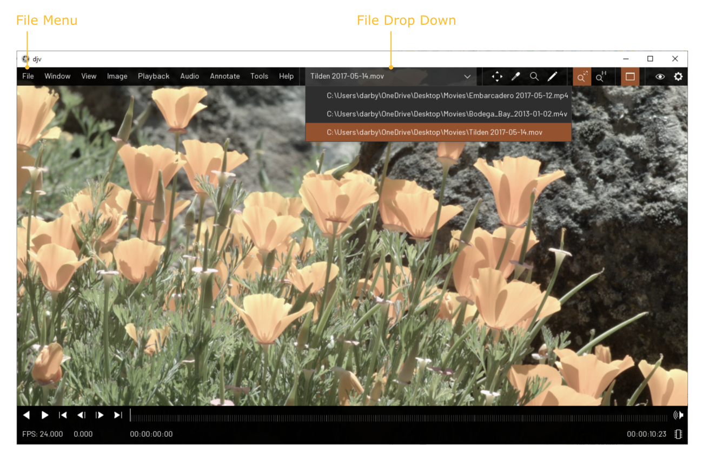
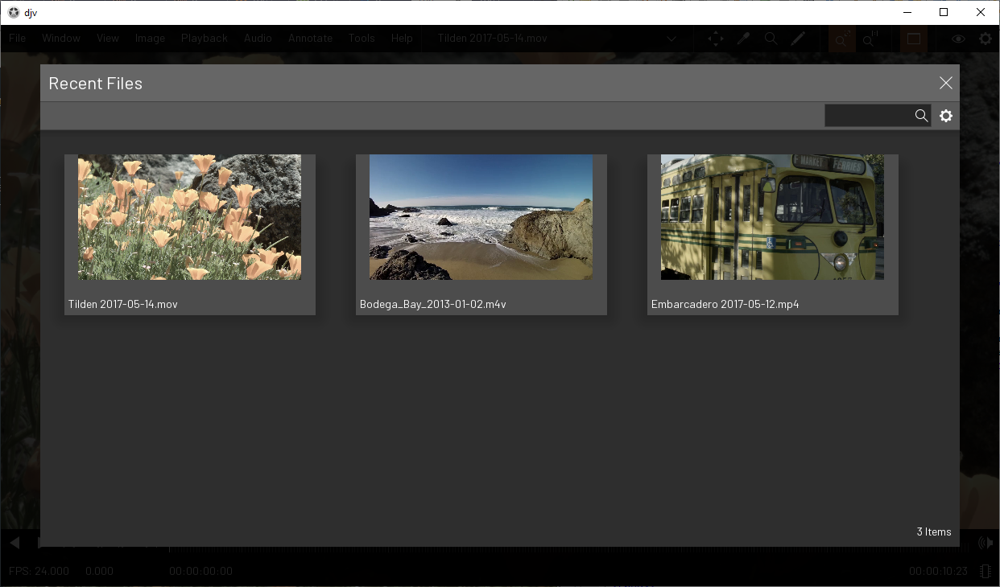
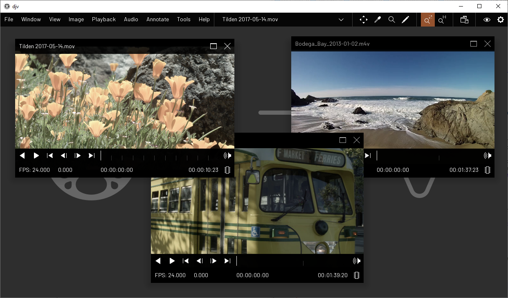
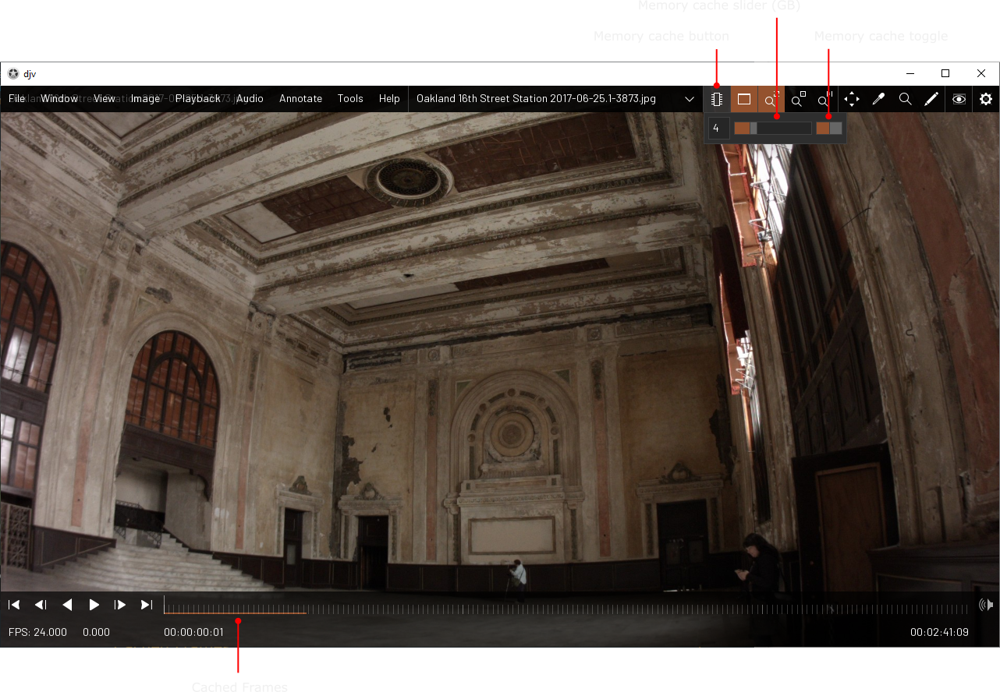

Home | Documentation | Working with Files
Opening and Closing Files
You can open files by using the "File/Open" menu,
dragging and dropping them onto the window, or listing them on the command-line. Multiples files
may be open at once, and you can switch between them by using the "File/Next" and "File/Previous" menu
items, or by using the file drop down menu on the menu bar. You can close the current file by using
the "File/Close" menu item. You can close all open files by using the "File/Close All" menu item.

Recent Files
You can see a list of recently opened files by
using the File/Recent menu item.

Maximized / Unmaximized
By default a single file at a time is displayed,
this is called "Maximized" mode. If you want to see all of the open files simultaneously you can
unmaximize the window using the "Window/Maximized" menu item, or the "Maximized" button on the
menu bar.

When maximized mode is disabled, you can drag the
files around by clicking and dragging on the title bar, or resize them by clicking and dragging
the edges of the windows.

Memory Cache
When viewing file sequences you can use the memory
cache to store frames in memory for faster playback performance. The memory cache is enabled by default,
you can change this and the default size in the settings dialog. To adjust the memory cache settings per
file, you can use the memory cache button at the bottom of the window. As the memory cache is loading
it will display which frames are cached in the timelime. Note that the memory cache is only used for
file sequences, not movie files.
